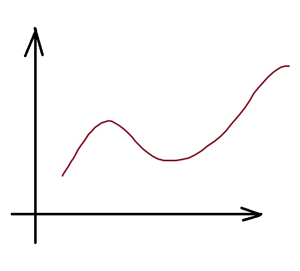

|
Esileht
|
Minust
|
Huvid
|
Eesmärgid
|
Kontakt
|
Olen TTÜ tudeng, õpin Informaatika erialal.
Mulle meeldib matemaatika, sellepärast siin asubki selline pilt:

See on tüüpilise tudengi õppimise funtsioon:
Alguses tudeng on aktiivne ning tahab õppida,
pärast on ta laisk ning ei tee midagi, lõpuks aga saabub sessioon ning ta hakkab tööle.